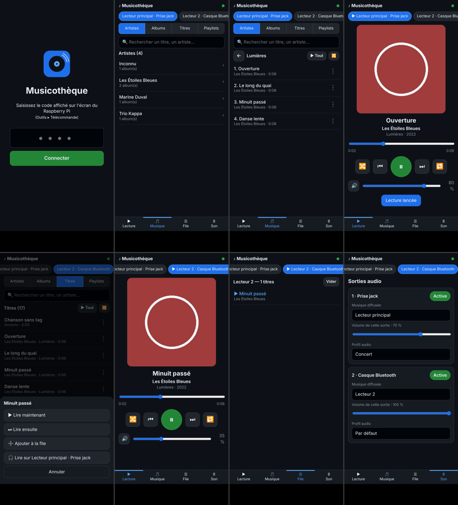
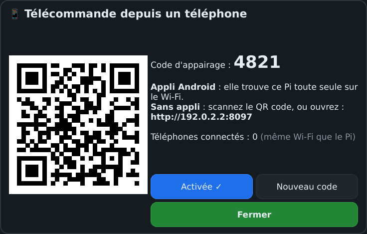

11. Télécommande Android
La version Raspberry Pi se pilote depuis un téléphone ou une tablette connecté au même Wi-Fi.
Ce qu'on peut faire
- lecture, pause, titre précédent et suivant, avancer dans le morceau, volume, aléatoire, répétition ;
- choisir de la musique : artistes, albums, titres, playlists, recherche ;
- gérer la file de lecture ;
- régler chaque sortie : volume, lecteur diffusé, profil audio, activation ;
- tout cela pour chacun des 3 lecteurs.
Installer l'application
- Sur le téléphone, ouvrez la page Releases du dépôt GitHub
decmike91/musicoteque et téléchargez Musicotheque-Telecommande.apk.
- Ouvrez le fichier et autorisez l'installation depuis cette source quand Android le demande.
- Lancez Musicothèque. L'application trouve toute seule le Raspberry Pi sur le Wi-Fi : touchez-le.
- Saisissez le code à 4 chiffres affiché sur le Pi dans Outils ▸ Télécommande.

La télécommande sur un téléphone Android.
Si le Pi n'est pas trouvé, saisissez l'adresse affichée dans la même fenêtre, par exemple 192.168.1.20:8080, puis Se connecter.
Sans application
Sur le Pi, ouvrez Outils ▸ Télécommande et scannez le QR code avec l'appareil photo du téléphone : la télécommande s'ouvre dans le navigateur, déjà appairée. Cela fonctionne aussi sur iPhone et sur un ordinateur.

Outils ▸ Télécommande : QR code et code d'appairage.
Code d'appairage et sécurité
- Le code est demandé une seule fois par téléphone.
- Nouveau code déconnecte tous les téléphones déjà appairés.
- Le bouton Activée coupe ou réactive la télécommande.
- Dans l'application, la touche Retour propose Changer de Musicothèque ou Quitter.
◀ 10. Version tactile (Raspberry Pi et autres cartes) · Sommaire · 12. Dépannage, raccourcis et fichiers ▶